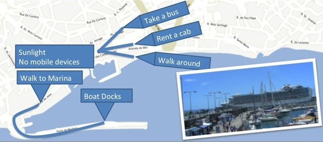
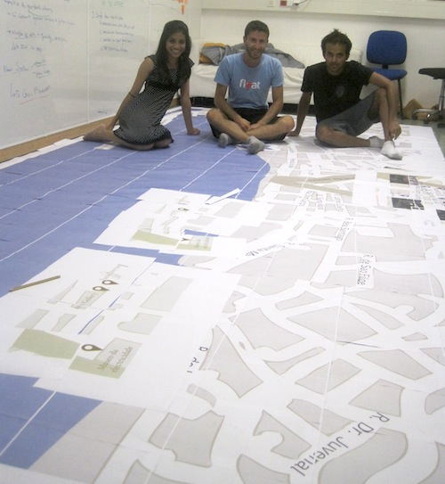
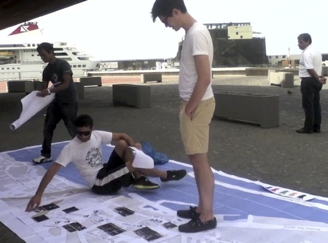

Big Interactive Map
This is a group design project, part of the Basic Interaction Design course. My role was conducting research, ideation, prototype implementation, and prototype testing. The focus is connecting the physical and virtual worlds for tourists coming to Madeira on cruise ships.
Based on observations and interviews at the port, we constructed personas and scenarios. In this situation, it is helpful to map the scenarios physically, as shown in the picture below.
The vision is a digital map surface that tourists walk on. They choose what kind of business they're interested in, and the businesses of interest pop up while they walk on the map. To test the idea, we constructed a prototype made of paper, and we manually place the businesses on the map.
We installed the prototype on the sidewalk leading to the port. The prototype test wasn't as successful as we thought it would be. Tourists always looked at the map, but there was nothing inviting them to interact with the map. Also, tourists were not in the mood to interact with humans - they prefer interacting with the display directly.
